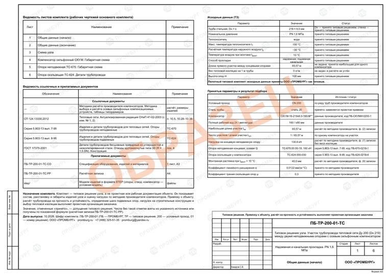
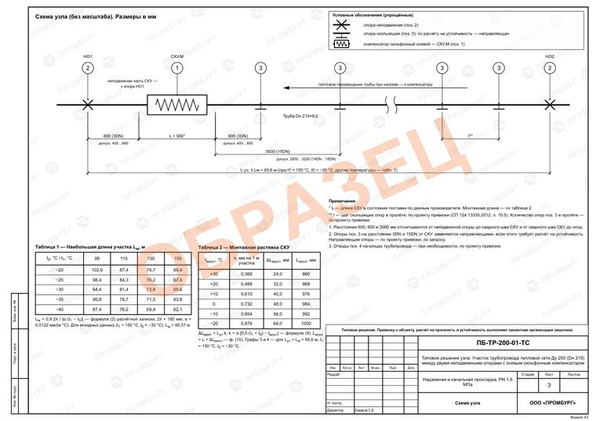
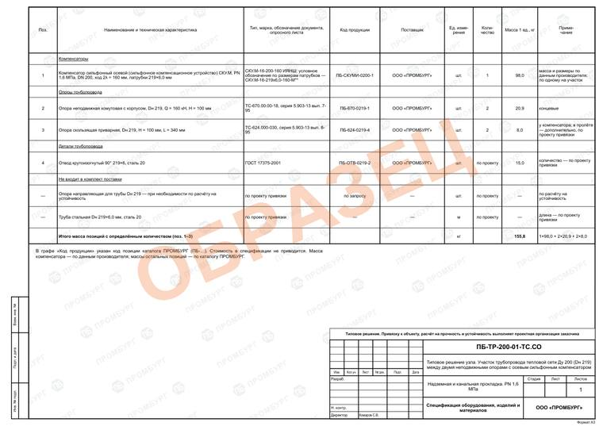

Типовое решение узла: участок тепловой сети Ду 200 с осевым сильфонным компенсатором
Готовый комплект на участок трубы Dн 219×6 между двумя неподвижными опорами с осевым сильфонным компенсатором. Надземная и канальная прокладка, PN 1,6 МПа, вода до 150 °С. Схема расстановки, спецификация с кодами каталога, расчётная записка и 3D-модели.
- Труба
- Dн 219×6,0 мм, Ду 200
- Давление
- PN 1,6 МПа
- Теплоноситель
- вода до 150 °С
- Прокладка
- надземная, подземная канальная
- Наибольшая длина участка
- 65,6 м при t1 = 150 °С, t0 = −30 °С; таблица для других температур — в комплекте
- Шифр комплекта
- ПБ-ТР-200-01
Состав комплекта
- Общие данные: ведомость листов, ссылочные документы, принятые параметры — 2 листа А3
- Схема узла: расстановка неподвижных и скользящих опор и компенсатора с размерами — лист А3
- Листы изделий: компенсатор, опора неподвижная, опора скользящая, отвод — 3 листа А3
- Спецификация по ГОСТ 21.110-2013 с кодами каталога ПРОМБУРГ — лист А3 и файл XLSX
- Расчётная записка: тепловое удлинение, длина участка, нагрузка на неподвижную опору, монтажная растяжка — 4 листа А4
- 3D-модели изделий в формате STEP
Изделия узла в каталоге
- СКУ.М-16-200-160 ИЯНШ — Компенсатор сильфонный осевой, ход 160 мм Компенсатор сильфонный СКУ.М (ИЯНШ) СКУМИ · код ПБ-СКУМИ-0200-1 · 1 шт.
- ТС-670.00.00-18 — Опора неподвижная хомутовая с корпусом, 160 кН Опора неподвижная хомутовая с корпусом ТС-670 · код ПБ-670-0219-1 · 2 шт.
- ТС-624.000-030 — Опора скользящая приварная Опора скользящая приварная ТС-624 · код ПБ-624-0219-4 · 2 шт. у компенсатора; в пролёте — по проекту привязки
- 219×6 — Отвод 90° 219×6, сталь 20 Отвод стальной крутоизогнутый 90° · код ПБ-ОТВ-0219-2 · по проекту привязки
Образцы листов
Три листа из комплекта в уменьшенном виде. Полный альбом — после оплаты.



Заказать
Электронная версия — 20 000 ₽
Альбом PDF (11 листов), спецификация XLSX, расчётная записка PDF, модели STEP. Отправляется на электронную почту после поступления оплаты.
С экспертизой инженера — 100 000 ₽
Комплект электронной версии и сканы листов с подписью конструктора. Срок — 10 дней после оплаты.
Цены указаны с НДС 22 %. Счёт выставляется по письму на promburg@yandex.ru: укажите вариант, реквизиты организации и адрес почты для комплекта. Оплата банковской картой и через СБП — скоро.
Важно
Типовое решение не является проектной или рабочей документацией объекта. Привязку к объекту, расчёт трубопровода на прочность и устойчивость, шаг подвижных опор и нагрузки на строительные конструкции определяет проектная организация заказчика.